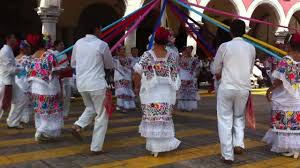

PARA ESCOLARES
EL COLEGIO DE BACHILLERES OFRECE VARIEDADES
DE PARA ESCOLARES, PARA MEJORAR TU DESTREZA

El fútbol fomenta la coordinación, el trabajo en equipo, la disciplina y la condición física, además de promover la diversión y el compañerismo entre los jugadores. Es uno de los deportes más populares en todo el mundo y puede ser practicado por personas de todas las edades y habilidades.
El básquetbol fomenta habilidades como el trabajo en equipo, la coordinación, el manejo del balón y la condición física. Además, es un deporte emocionante que promueve la camaradería y el fair play entre los jugadores. Es una actividad popular en escuelas y comunidades de todo el mundo, y puede ser disfrutada tanto de manera recreativa como competitiva.

La banda de guerra participa en desfiles, eventos cívicos y competencias donde demuestran habilidades de disciplina, sincronización y trabajo en equipo. Además de ser una actividad divertida, la banda de guerra fomenta el compañerismo, el respeto y el orgullo por la escuela o institución a la que representan.

Los bailarines suelen utilizar trajes típicos elaborados y coloridos, acompañados de música en vivo que incluye instrumentos como la guitarra, el violín y el jaranillo. La danza de jarana es una forma de celebrar la identidad cultural y promover el orgullo por las raíces mexicanas.
Beisbol

El béisbol es un deporte emocionante y dinámico que se practica en nuestra escuela con pasión y entusiasmo. En nuestro plantel, fomentamos la participación en este deporte tradicional que promueve valores como el trabajo en equipo, la disciplina y la superación personal.